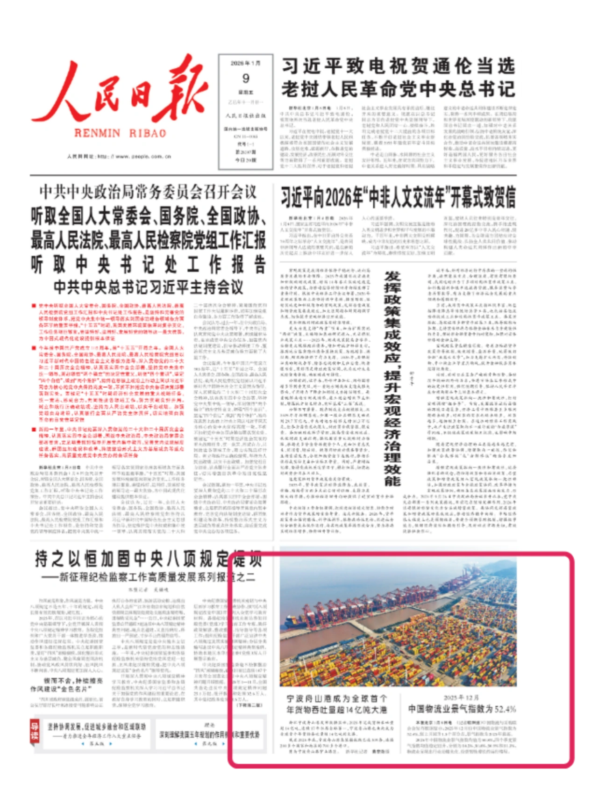
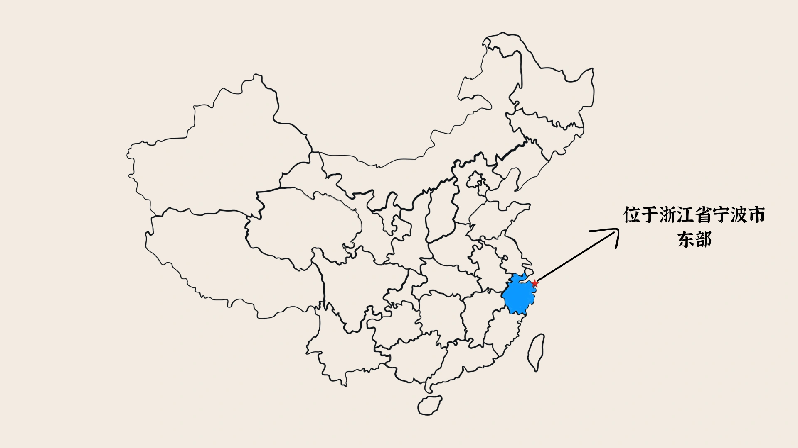
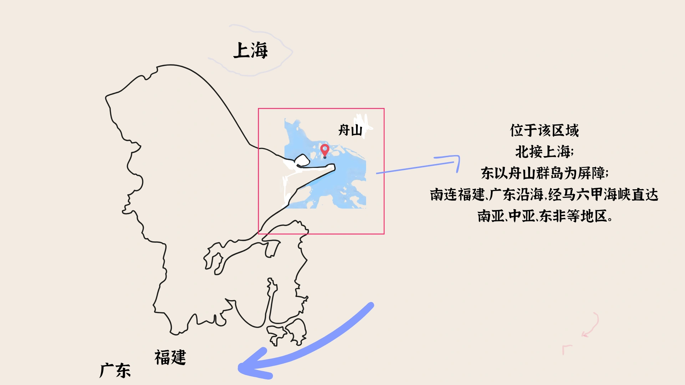
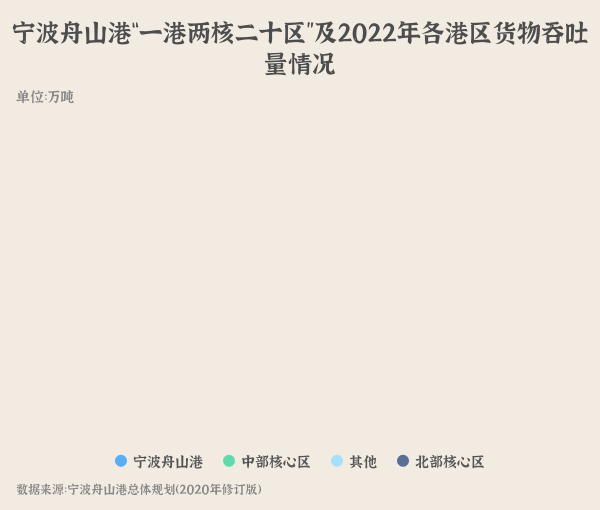
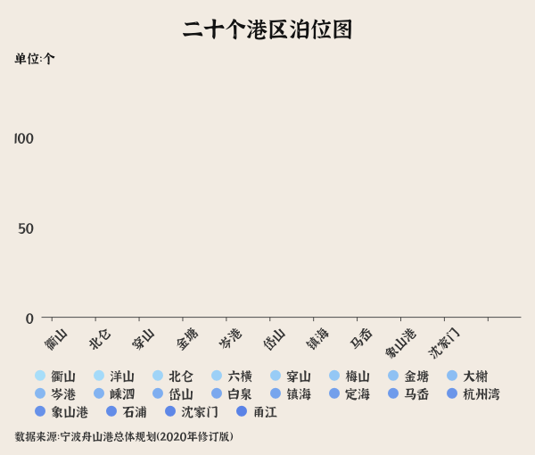
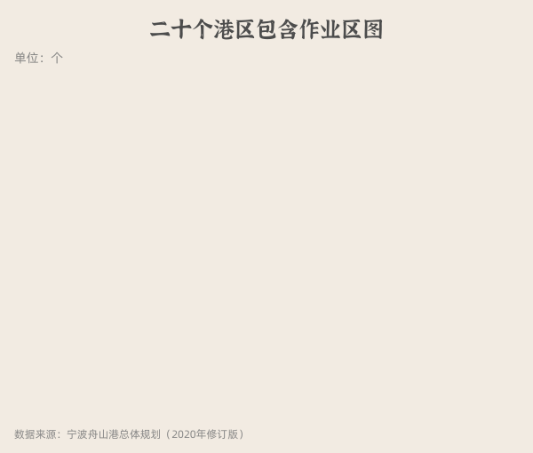
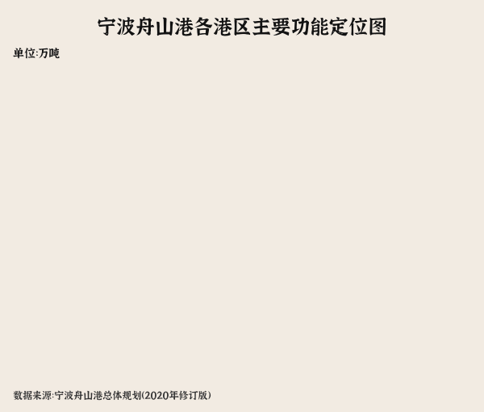
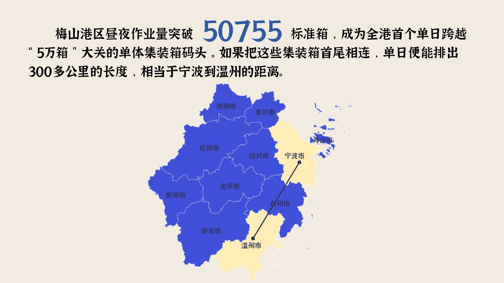
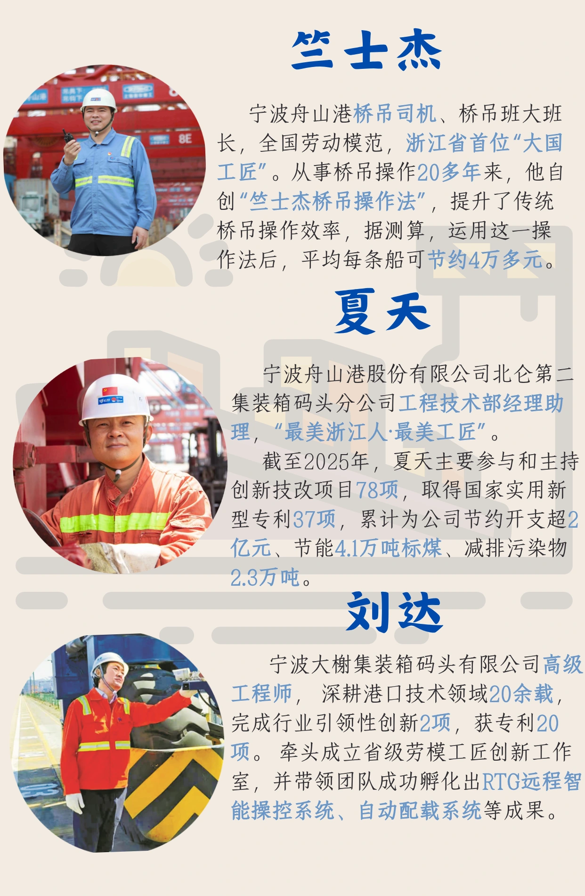
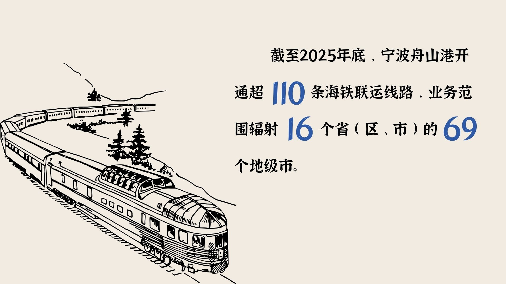

2026年1月，浙江宁波舟山港发布数据显示：2025年完成货物吞吐量超14亿吨，连续17年位居全球第一，宁波舟山港也由此成为全球首个年货物吞吐量超14亿吨的大港。

宁波舟山港作为中国连接世界贸易的重要窗口，究竟是如何将一件件货物高效送达全球各地的？又为何能够连续17年稳居全球第一？让我们一探究竟！
承古拓今，布势成局
宁波舟山港西依宁绍平原及江南经济腹地，北接上海，东以舟山群岛为屏障，南连福建、广东沿海，经广州、香港等港口。


宁波舟山港的建设与发展并非一蹴而就，它的成长始终嵌入中国历史进程的潮汐之中，每一次跃迁，都与中国历史的重要节点同频共振。
2023年11月26-28日，交通运输部联合浙江省人民政府在舟山市召开《宁波舟山港总体规划（修订）》评审会议，专家组一致同意规划修订方案通过评审，宁波舟山港在空间格局方面调整为“一港、两核、二十区”。



二十个港区根据各自优势特点，因地制宜分配主要功能材料，共同构建一个分工清晰、优势互补的现代化港口功能体系。各港区各展其长、协同联动，形成高效运转的海洋经济枢纽。

货通四海，数智赋能
近五年宁波舟山港货物吞吐量在全国前十排名中也遥遥领先。
在高货物和集装箱吞吐量的背后，离不开港口基础设施的赋能与现代化改造，正是依托港口装制设备的支撑和智能化码头的升级改造等举措，宁波舟山港才得以不断释放其作为全球枢纽港的强大动能。
在智慧港口建设方面, 智慧大脑和自动作业两方发力，共同支撑港口的效率提升和现代化升级。

其中, “智慧大脑”指挥智慧港口, “左右脑”各司其职，让港口有序运行。
以梅山港区为例，其自动化设备帮助港区提升作业效率。


基础设施持续完善与提升的背后，凝结着新时代工程师与技术人员的智慧与汗水。他们以坚守与创新为笔，在一项项工程建设中默默耕耘，共同托举起港口发展的坚实基座。

港通天下，岸接全球
宁波舟山港航线网络密集，通达全球各大洲主要港口，海运线路纵横交错、四通八达构建起连接世界的高效物流通道，持续强化其国际航运枢纽地位。

“海铁联运”作为多式联运的一种形式，其历史悠久，进出口货物通过铁路运输经由沿海海港与船舶运输相连、只需“一次申报、一次查验、一次放行”就可以完成整个运输过程。
宁波舟山港通过高效衔接海运与铁路运输，实现“海上通全球、铁路达内陆”的无缝联运，大幅提升货物集疏运效率与辐射范围。

在贸易往来方面，近五年欧盟与美国始终稳居宁波舟山港主要贸易伙伴前列，体现出其在全球航运网络中的稳定连接与核心地位。
近五年来，宁波舟山港散杂货品接卸繁多，主要为矿石、原油。
风起潮涌，破局前行
面向未来，宁波舟山港在坚持节约集约利用的基础上持续优化岸线资源配置，规划港口岸线较现状减少11%，但泊位数量仍实现46%的增长，资源利用效率显著提升。通过对航道与锚地体系的系统性扩容，航道里程较现状增长65%，锚地面积提升80%，整体通航与调度能力进一步增强。与此同时，规划将清洁贷种比例提升9个百分点，并对绿色、智慧、平安港区建设提出更高要求。
随着空间布局与功能体系不断完善，宁波舟山港正迈向更高水平的集约化与现代化发展阶段。让我们一起期待和展望，宁波舟山港的无限潜能与未来发展！
数据来源
一、政府部门
- [1]中华人民共和国交通运输部“政府信息公开”《2025年港口货物、集装箱吞吐量》
- [2]中华人民共和国交通运输部“政府信息公开”《2024年港口货物、集装箱吞吐量》
- [3]中华人民共和国交通运输部“政府信息公开”《2023年港口货物、集装箱吞吐量》
- [4]中华人民共和国交通运输部“政府信息公开”《2022年12月全国港口货物、集装箱吞吐量》
- [5]中华人民共和国交通运输部“政府信息公开”《2021年港口货物、集装箱吞吐量》
- [6]宁波海关“政府信息公开”《2025年1-12月宁波口岸前十大贸易伙伴进出口总值表（图表图解）》
- [7]宁波海关“政府信息公开”《2024年1-12月宁波口岸前十大贸易伙伴进出口总值表（图表图解）》
- [8]宁波海关“政府信息公开”《2023年1-12月宁波口岸前十大贸易伙伴进出口总值表（图表图解）》
- [9]宁波海关“政府信息公开”《2022年1-12月宁波口岸前十大贸易伙伴进出口总值表（图表图解）》
- [10]宁波海关“政府信息公开”《2021年1-12月宁波口岸前十大贸易伙伴进出口总值表（图表图解）》
- [11]宁波市统计局“数据宁波”《宁波舟山港集装箱吞吐量》
- [12]中国港口网“宁波舟山港”
- [13]宁波市人民政府《梅山港区高效运转的“加减法”》
- [14]国务院新闻办公室《宁波舟山港成为全球首个年货物吞吐量超14亿吨大港》
二、公司年度报告
- [1]宁波舟山港股份有限公司2025年年度报告
- [2]宁波舟山港股份有限公司2024年年度报告
- [3]宁波舟山港股份有限公司2023年年度报告
- [4]宁波舟山港股份有限公司2022年年度报告
- [5]宁波舟山港股份有限公司2021年年度报告
三、新闻来源
- [1]舟山市港航和口岸管理局 搜狐新闻：舟山市港航和口岸管理局
- [2]新华财经·中国金融信息网·新华指数，2026年05月28日
- [3]人民日报《宁波舟山港成为全球首个年货物吞吐量超14亿吨大港》
四、书籍和论文
- [1]罗娜、白斌、李诗怡.东方大港：宁波舟山港[M].杭州：浙江工商大学出版社，2024.
- [2]赵庆国，姚儒罪.看东方大港如何实现绿色化智慧巨变——走进浙江宁波舟山港梅东集装箱码头[N].中国改革报，2025-08-08(001).
- [3]黄深广，倪洁，赵诚君，等.超大型集装箱码头生产操作系统n-TOS研发及应用[J].中国港口，2022，(8)：62-64.
- [4]黄深广，朱甬翔，倪洁，等.自动化集装箱码头智能设备调度系统[J].中国港口，2022，(6)：61-64.